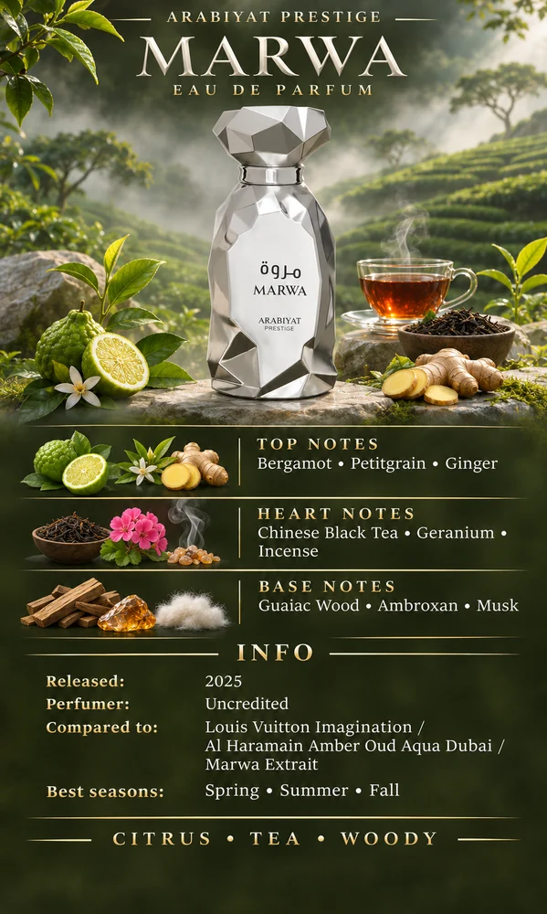

Arabiyat Prestige
Marwa Eau de Parfum
γ Gamma Inspired by · Eau de Parfum · 2025 In collection
Randy's rating8.75/10
Public rating9/10
Overall R18.62/21
Normalized N0.887
R = 8.75 × 1.1 + 9 × 1 = 18.62 of 21 · N = 18.62 ÷ 21 = 0.887 How scores work
Notes
Top notes
- bergamot
- petitgrain
- ginger
Heart notes
- chinese black tea
- geranium
- incense
Base notes
- guaiac wood
- ambroxan
- musk
Details
| House | Arabiyat Prestige |
|---|---|
| Type | Inspired by · γ Gamma |
| Concentration | Eau de Parfum |
| Released | 2025 |
| Perfumer | — |
| Scent family | Amber & Resin, Aromatic, Citrus |
| Best seasons | Spring, Summer, Fall |
| Similar to | Louis Vuitton Imagination Al Haramain Amber Oud Aqua Dubai Arabiyat Prestige Marwa Extrait |
Sources
Fragrantica 4.32/5 (about 8.6/10) from 3,507 votes; Parfumo 8.5/10 from 1,481 ratings (EDP). Average about 8.6, rounded to 9. Checked 2026-11-14.